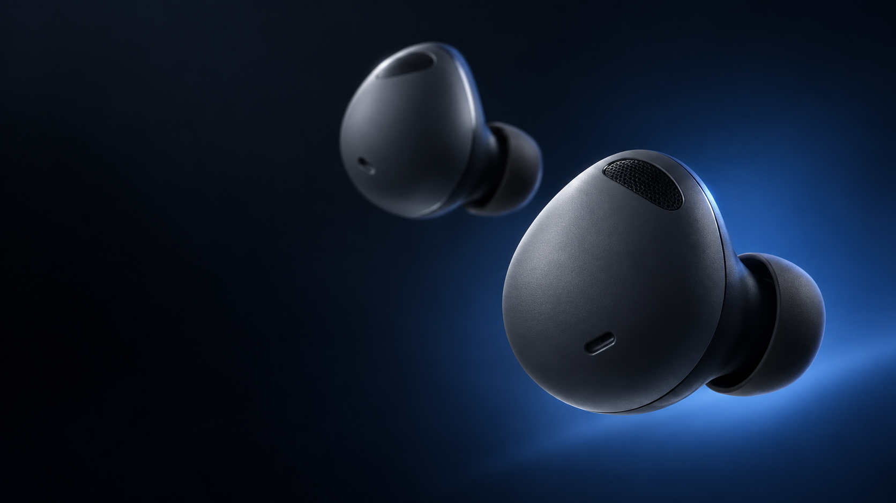
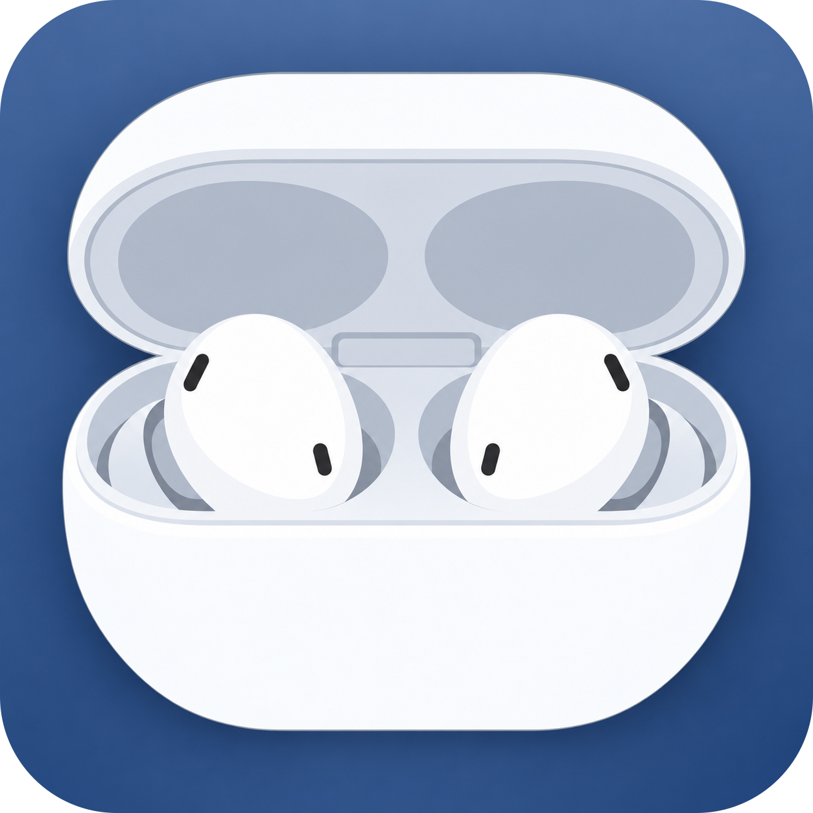

Galaxy Buds2 Pro · macOS
Your Buds.
Your Mac.
A better home for your earbuds.
01 / ProductControl, beautifully close.
At a glance
Know every
charge.
80%
70%
74%
Left. Right. Case. All in one place.
Buds2 Pro controls
Change the sound.
Keep the flow.
ANC
Ambient
Off
A quick switch from the menu bar.
OFF
More within reach
Go a little
deeper.
Equalizer
Touch controls
Voice Detect
Find my earbuds


Galaxy Buds Manager
for macOS.
One click from your menu bar.
Built for Galaxy Buds2 Progithub.com/heyaaakash/galaxy-buds-manager